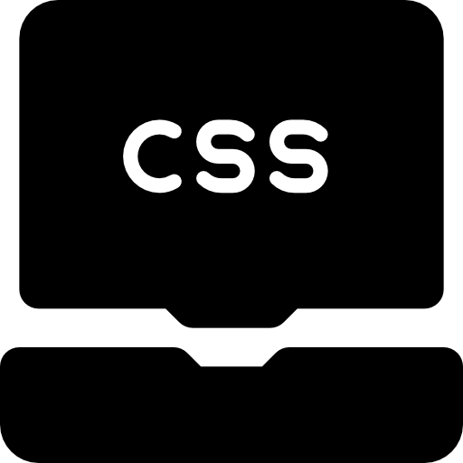

Wesley Carvalho
Olá! Meu nome é Wesley, sou um profissional apaixonado pela área de tecnologia. Com 28 anos e nascido em Brasília, tive a oportunidade de adquirir experiência em diferentes setores ao longo da minha carreira.
Iniciei minha jornada trabalhando em laboratórios de informática na Universidade Paulista (UNIP) e na Uniprojeção. Essas experiências foram fundamentais para aprimorar minhas habilidades técnicas e obter um conhecimento em diversas áreas da TI. Trabalhar em laboratórios de informática me proporcionou familiaridade com as algumas tecnologias e uma abordagem analítica na resolução de problemas.
Além disso, atualmente atuo como técnico de telecomunicações na empresa Absfibra. Nessa função, pude aprimorar minhas habilidades práticas na parte de infraestrutura, instalação e manutenção de redes de telecomunicações. Aprendi a lidar com desafios em um ambiente dinâmico e desenvolvi uma abordagem voltada para o atendimento ao cliente.
Atualmente, estou cursando Análise e Desenvolvimento de Sistemas na UNIP. Essa oportunidade me permite aprofundar ainda mais meus conhecimentos e habilidades nessa área. Além disso, estou dedicando parte do meu tempo a um curso de Desenvolvedor Front-End, onde estou aprendendo HTML, CSS, Versel, JavaScript, Figma, IQuery, Bootstrap, TypeScript, VueJS e React.
Estou sempre em busca de aprendizado contínuo e atualização em relação às últimas tendências do setor. Minha abordagem é focada na resolução de problemas e na busca por soluções inovadoras. Tenho facilidade em aplicar meus conhecimentos em projetos práticos e estou preparado para enfrentar novos desafios.
Acredito que posso contribuir de forma significativa para qualquer equipe, trazendo minha experiência diversificada, minha vontade de aprender e minhas habilidades técnicas. Minha paixão pela tecnologia e minha motivação em enfrentar novos desafios são atributos que me destacam como profissional.
Estou animado com as oportunidades futuras e ansioso para contribuir para o sucesso dos projetos em que estiver envolvido.

- 